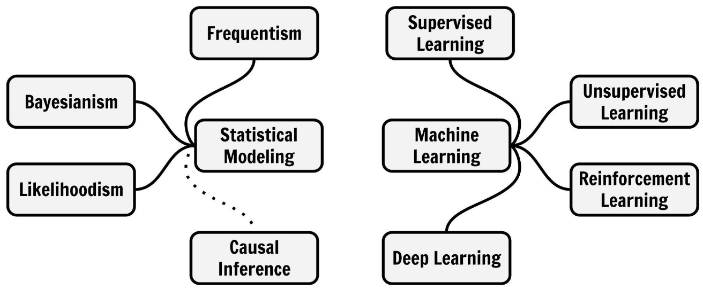
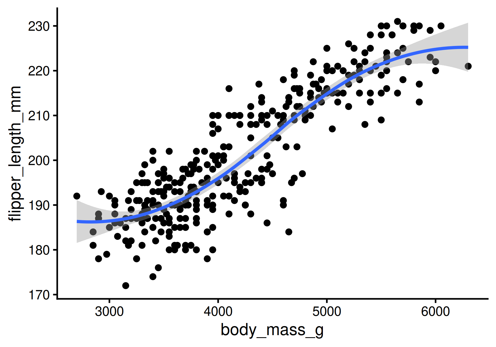

W#07: Models in Science, Linear Model, Nonlinear Models
Preliminaries
Models in Science
What is a model?
- A model is an informative representation of an object, person or system.


- A model is a simplified representation of the real world focusing on the essential parts for its purpose.
Scientific Modeling
Scientific modeling is an activity that produces models representing empirical objects, phenomena, and physical processes, to make a particular part or feature of the world easier to
- understand,
- define,
- quantify,
- visualize, or
- simulate.

Model Purposes and Data Analysis
- Agent-based models and differential equations
- are used to explain the dynamics of one or more variables (typically) over time. They are used to answer mechanistic questions.
- Variable-based models
- are used to specify relations between variables
- to explain relations and make predictions.
- Used to answer inferential and predictive questions.
- (With experimental and theoretical effort also for causal questions.)

The most basic variable-based model is the linear model.
Models to Learn from Data
In much of the following we use a narrower definition of model:
A mathematical model that consists of variables and functions.
Different names and roles of variables:
- random variables
- covariates
- predictors
- latent variables
- features
- targets
- outcomes
Functions relate variables to each other
- In a linear model we model one variable as a weighted sum of the other variables
Once a model (setup of variables and functions) is specified, modelers use Data to find the best function, called
- estimation
- training
- fitting
- learning
Modeling Mindsets
Even within the setup of Models to Learn from Data there are many different Modeling Mindsets

Modeling Mindsets
Even within the setup of Models to Learn from Data there are many different Modeling Mindsets

Linear Model
The first work-horse model in data science
Hello again penguins!
We use the dataset Palmer Penguins
Chinstrap, Gentoo, and Adélie Penguins


# A tibble: 344 × 8
species island bill_length_mm bill_depth_mm flipper_length_mm body_mass_g
<fct> <fct> <dbl> <dbl> <int> <int>
1 Adelie Torgersen 39.1 18.7 181 3750
2 Adelie Torgersen 39.5 17.4 186 3800
3 Adelie Torgersen 40.3 18 195 3250
4 Adelie Torgersen NA NA NA NA
5 Adelie Torgersen 36.7 19.3 193 3450
6 Adelie Torgersen 39.3 20.6 190 3650
7 Adelie Torgersen 38.9 17.8 181 3625
8 Adelie Torgersen 39.2 19.6 195 4675
9 Adelie Torgersen 34.1 18.1 193 3475
10 Adelie Torgersen 42 20.2 190 4250
# ℹ 334 more rows
# ℹ 2 more variables: sex <fct>, year <int>Body mass in grams
Flipper length in millimeters
Relate variables as a line
A line is a shift-scale transformation of the identity function usually written in the form
\[f(x) = a\cdot x + b\]
where \(a\) is the slope, \(b\) is the intercept.1
a <- 0.5
b <- 1
func <- function(x) a*x + b
ggplot() + geom_function(fun = func, size = 2) +
# Set axis limits and make axis equal
xlim(c(-0.5,2)) + ylim(c(0,2)) + coord_fixed() +
geom_line( # intercept line:
data=tibble(x=c(0,0),y=c(0,1)),
mapping = aes(x,y),
color = "blue", size = 2) +
geom_line( # slope:
data=tibble(x=c(1.5,1.5),y=c(1.25,1.75)),
mapping = aes(x,y),
color = "red", size = 2) +
geom_line( # x-interval of length one:
data=tibble(x=c(0.5,1.5),y=c(1.25,1.25)),
mapping = aes(x,y), color = "gray") +
theme_classic(base_size = 24)Penguins: Linear model
Flipper length as a function of body mass.
Penguins: A smooth line
Flipper length as a function of body mass with loess1 smoothing.

This is a less theory-driven and more data-driven model. Why?
We don’t have a simple mathematical form of the function.
Terminology variable-based models
- Response variable:1 Variable whose behavior or variation you are trying to understand, on the y-axis
- Explanatory variable(s):2 Other variable(s) that you want to use to explain the variation in the response, on the x-axis
- Predicted value: Output of the model function.
- The model function gives the (expected) average value of the response variable conditioning on the explanatory variables
- Residual(s): A measure of how far away a case is from its predicted value (based on the particular model)
Residual = Observed value minus Predicted value
The residual tells how far above/below the expected value each case is
More explanatory variables
How does the relation between flipper length and body mass change with different species?
ggplot-hint: How to color penguins but keep one model?
Put the mapping of the color aesthetic into the geom_point command.
Beware of Simpson’s paradox
Slopes for all groups can be in the opposite direction of the main effect’s slope!

The paradox is real!
How does the relation between bill length and body mass change with different species?
Models - upsides and downsides
- Models can reveal patterns that are not evident in a graph of the data. This is an advantage of modeling over simple visual inspection of data.
- How would you visualize dependencies of more than two variables?
- The risk is that a model is imposing structure that is not really there in the real world data.
- People imagined animal shapes in the stars. This is maybe a good model to detect and memorize shapes, but it has nothing to do with these animals.
- Every model is a simplification of the real world, but there are good and bad models (for particular purposes).
- A skeptical (but constructive) approach to a model is always advisable.
Variation around a model
… is as interesting and important as the model!
Statistics is the explanation of uncertainty of variation in the context of what remains unexplained.
- The scattered data of flipper length and body mass suggests that there maybe other factors that account for some parts of the variability.
- Or is it randomness?
- Adding more explanatory variables can help (but need not)
All models are wrong …
… but some are useful. (George Box)
Extending the range of the model:
- The model predicts that penguins with zero weight still have flippers of about 140 mm on average.
- Is the model useless? Yes, around zero body mass. No, it works OK in the range of the body mass data.
Two model purposes
Linear models can be used for:
- Explanation: Understand the relationship of variables in a quantitative way.
For the linear model, interpret slope and intercept.- In other words: We make inference about relations in any sample of penguins.
- Prediction: Plug in new values for the explanatory variable(s) and receive the expected response value.
For the linear model, predict the flipper length of new penguins by their body mass.
Fitting Models
Today: The linear model.
In R: tidymodels

Our goal
Predict flipper length from body mass
average flipper_length_mm \(= \beta_0 + \beta_1\cdot\) body_mass_g
Step 1: Specify model
Step 2: Set the model fitting engine
Step 3: Fit model and estimate parameters
Only now, the data and the variable selection comes in.
Use of formula syntax
parsnip model object
Call:
stats::lm(formula = flipper_length_mm ~ body_mass_g, data = data)
Coefficients:
(Intercept) body_mass_g
136.72956 0.01528 parsnip is package in tidymodels which is to provide a tidy, unified interface to models that can be used to try a range of models.
What does the output say?
parsnip model object
Call:
stats::lm(formula = flipper_length_mm ~ body_mass_g, data = data)
Coefficients:
(Intercept) body_mass_g
136.72956 0.01528 average flipper_length_mm \(= 136.72956 + 0.01528\cdot\) body_mass_g
Interpretation:
The penguins have a flipper length of 138 mm plus 0.01528 mm for each gram of body mass (that is 15.28 mm per kg). Penguins with zero mass have a flipper length of 138 mm. However, this is not in the range where the model was fitted.
Show output in tidy form
Parameter estimation
Notation from statistics: \(\beta\)’s for the population parameters and \(\hat\beta\)’s for the parameters estimated from the sample statistics.
\[\hat y = \beta_0 + \beta_1 x\]
The population parameters \(\beta_0\) and \(\beta_1\) we cannot have. (\(\hat y\) stands for predicted value of \(y\). )
Instead, we estimate \(\hat\beta_0\) and \(\hat\beta_1\) in the model fitting process.
\[\hat y = \hat\beta_0 + \hat\beta_1 x\]
A typical follow-up data analysis question is what the fitted values \(\hat\beta_0\) and \(\hat\beta_1\) tell us about the (unknown) population-wide values \(\beta_0\) and \(\beta_1\)?
This is the typical inferential question.
parsnip model objects
pengmod <- linear_reg() |>
set_engine("lm") |>
fit(flipper_length_mm ~ body_mass_g, data = penguins)
class(pengmod) # attributes[1] "_lm" "model_fit"[1] "list"[1] "lvl" "ordered" "spec" "fit" "preproc"
[6] "elapsed" "censor_probs"Most interesting for us for now: $fit
Notice: parsnip model object is now missing in the output.
$fit is the object created by lm (base R)
[1] "coefficients" "residuals" "effects" "rank"
[5] "fitted.values" "assign" "qr" "df.residual"
[9] "na.action" "xlevels" "call" "terms"
[13] "model" stats::lm(formula = flipper_length_mm ~ body_mass_g, data = data) (Intercept) body_mass_g
136.72955927 0.01527592 1 2 3 5 6 7 8 9
194.0142 194.7780 186.3763 189.4315 192.4867 192.1048 208.1445 189.8134
10 11 12 13 14 15 16 17
201.6522 187.1401 193.2504 185.6125 194.7780 203.9436 193.2504 189.4315
18 19 20 21 22 23 24 25
205.4712 187.5220 200.8884 188.6677 191.7229 194.7780 197.0694 194.7780
26 27 28 29 30 31 32 33
194.7780 190.9591 185.6125 184.8487 197.0694 186.3763 196.3056 187.1401
34 35 36 37 38 39 40 41
196.3056 187.5220 200.1246 197.0694 190.9591 187.1401 207.7626 184.8487
42 43 44 45 46 47 48 49
196.3056 184.0849 203.9436 182.5573 206.9988 189.0496 182.1754 189.4315
50 51 52 53 54 55 56 57
200.1246 190.1953 202.4160 189.4315 198.5970 181.0297 193.2504 190.9591
58 59 60 61 62 63 64 65
194.7780 180.2659 194.0142 184.8487 203.9436 191.7229 198.5970 180.2659
66 67 68 69 70 71 72 73
197.0694 187.9039 199.3608 183.3211 204.7074 191.7229 196.3056 190.9591
74 75 76 77 78 79 80 81
200.1246 193.2504 201.6522 193.2504 196.3056 190.9591 197.8332 185.6125
82 83 84 85 86 87 88 89
208.5264 194.7780 200.8884 187.9039 190.9591 194.7780 190.1953 197.0694
90 91 92 93 94 95 96 97
191.7229 190.9591 202.4160 188.6677 204.7074 187.1401 202.4160 193.2504
98 99 100 101 102 103 104 105
203.1798 181.0297 199.3608 193.6323 208.9083 183.7030 201.6522 181.4116
106 107 108 109 110 111 112 113
190.9591 194.0142 196.3056 185.2306 209.6721 195.1599 206.9988 185.6125
114 115 116 117 118 119 120 121
202.0341 196.3056 198.9789 181.0297 194.3961 187.9039 187.5220 184.8487
122 123 124 125 126 127 128 129
190.1953 189.4315 195.9237 183.3211 197.8332 186.7582 202.4160 183.3211
130 131 132 133 134 135 136 137
197.8332 187.5220 190.1953 190.1953 205.0893 189.0496 196.3056 185.2306
138 139 140 141 142 143 144 145
197.4513 188.6677 201.6522 188.6677 189.8134 183.3211 193.6323 182.5573
146 147 148 149 150 151 152 153
192.4867 201.6522 189.8134 189.4315 194.0142 193.2504 197.8332 205.4712
154 155 156 157 158 159 160 161
223.8023 204.7074 223.8023 219.2195 206.2350 210.0540 216.1643 203.9436
162 163 164 165 166 167 168 169
215.4005 207.7626 221.5109 207.7626 226.0937 200.8884 226.0937 200.1246
170 171 172 173 174 175 176 177
232.9678 210.0540 218.4557 223.8023 213.1091 203.9436 213.8729 213.1091
178 179 180 181 182 183 184 185
214.6367 199.3608 223.0385 206.9988 221.5109 216.9281 208.5264 213.8729
186 187 188 189 190 191 192 193
229.1488 215.4005 219.2195 212.3453 216.9281 203.1798 218.4557 197.0694
194 195 196 197 198 199 200 201
223.8023 202.4160 209.2902 221.5109 211.5815 200.8884 219.2195 214.6367
202 203 204 205 206 207 208 209
217.6919 210.8177 217.6919 203.9436 213.1091 211.5815 213.8729 202.4160
210 211 212 213 214 215 216 217
213.1091 204.7074 221.5109 200.8884 217.6919 203.9436 223.0385 208.5264
218 219 220 221 222 223 224 225
223.8023 207.7626 225.3299 208.5264 221.5109 209.2902 213.1091 214.6367
226 227 228 229 230 231 232 233
216.1643 208.5264 225.3299 206.9988 228.3851 209.2902 227.6213 207.3807
234 235 236 237 238 239 240 241
219.9833 208.9083 218.4557 209.2902 222.2747 206.9988 217.6919 211.1996
242 243 244 245 246 247 248 249
221.5109 212.3453 219.2195 209.2902 223.0385 210.8177 216.1643 211.9634
250 251 252 253 254 255 256 257
211.1996 207.3807 216.9281 210.8177 222.2747 212.7272 220.7471 208.9083
258 259 260 261 262 263 264 265
220.7471 208.5264 220.7471 206.6169 220.7471 213.1091 227.6213 207.7626
266 267 268 269 270 271 273 274
220.7471 203.5617 226.0937 211.1996 228.3851 211.9634 210.8177 224.5661
275 276 277 278 279 280 281 282
216.1643 219.2195 190.1953 196.3056 192.4867 190.5772 193.6323 197.0694
283 284 285 286 287 288 289 290
186.3763 194.0142 200.1246 193.2504 194.7780 194.3961 193.2504 198.5970
291 292 293 294 295 296 297 298
191.3410 198.5970 187.1401 193.2504 189.4315 203.9436 191.7229 188.6677
299 300 301 302 303 304 305 306
181.0297 194.7780 187.1401 200.1246 188.6677 194.7780 193.2504 206.2350
307 308 309 310 311 312 313 314
185.6125 202.4160 187.9039 199.3608 191.7229 196.3056 195.5418 210.0540
315 316 317 318 319 320 321 322
177.9745 205.4712 197.0694 192.4867 190.9591 190.1953 192.8685 204.7074
323 324 325 326 327 328 329 330
188.6677 202.4160 186.3763 192.8685 187.5220 197.0694 191.7229 198.5970
331 332 333 334 335 336 337 338
187.9039 189.4315 186.3763 198.5970 194.7780 190.5772 197.0694 192.4867
339 340 341 342 343 344
192.4867 197.8332 188.6677 194.3961 199.3608 194.3961 1 2 3 5 6 7
-13.01424280 -8.77803858 8.62371500 3.56853188 -2.48665124 -11.10475335
8 9 10 11 12 13
-13.14446474 3.18663399 -11.65220061 -1.14008078 -13.25044702 -3.61248922
14 15 16 17 18 19
-3.77803858 -5.94358795 -8.25044702 5.56853188 -8.47117951 -3.52197867
20 21 22 23 24 25
-6.88840483 -14.66767234 -11.72285546 -5.77803858 -12.06942592 -14.77803858
26 27 28 29 30 31
-7.77803858 -7.95905968 1.38751078 -12.84869344 -17.06942592 -8.37628500
32 33 34 35 36 37
-18.30563014 0.85991922 -12.30563014 7.47802133 -4.12460905 -7.06942592
38 39 40 41 42 43
-10.95905968 -6.14008078 -23.76256685 -2.84869344 -1.30563014 1.91510234
44 45 46 47 48 49
-7.94358795 2.44269390 -16.99877107 -7.04957023 -3.17540821 0.56853188
50 51 52 53 54 55
-9.12460905 -4.19526390 -14.41599639 0.56853188 1.40298251 5.97028546
56 57 58 59 60 61
-2.25044702 -4.95905968 -1.77803858 0.73408124 -0.01424280 0.15130656
62 63 64 65 66 67
-8.94358795 -6.72285546 -6.59701749 3.73408124 -5.06942592 7.09612344
68 69 70 71 72 73
-11.36081327 6.67889812 -6.70738373 -1.72285546 -6.30563014 5.04094032
74 75 76 77 78 79
-3.12460905 -3.25044702 -6.65220061 -2.25044702 -12.30563014 -3.95905968
80 81 82 83 84 85
-2.83322170 3.38751078 -12.52636263 -7.77803858 -7.88840483 3.09612344
86 87 88 89 90 91
3.04094032 -4.77803858 -1.19526390 -8.06942592 -1.72285546 11.04094032
92 93 94 95 96 97
2.58400361 -3.66767234 -18.70738373 -0.14008078 5.58400361 -3.25044702
98 99 100 101 102 103
-7.17979217 -3.02971454 -7.36081327 -1.63234491 -5.90826052 -0.70299977
104 105 106 107 108 109
-11.65220061 11.58838757 -6.95905968 4.98575720 -6.30563014 -4.23059133
110 111 112 113 114 115
-12.67205630 2.84006353 -15.99877107 7.38751078 -5.03409850 -5.30563014
116 117 118 119 120 121
-2.97891538 6.97028546 4.60385931 1.09612344 1.47802133 2.15130656
122 123 124 125 126 127
7.80473610 -13.43146812 6.07626775 2.67889812 1.16677830 4.24181711
128 129 130 131 132 133
-7.41599639 7.67889812 12.16677830 2.47802133 6.80473610 2.80473610
134 135 136 137 138 139
-6.08928162 -2.04957023 -6.30563014 5.76940867 2.54867619 -3.66767234
140 141 142 143 144 145
-8.65220061 4.33232766 -2.81336601 4.67889812 -3.63234491 9.44269390
146 147 148 149 150 151
-7.48665124 -11.65220061 -5.81336601 5.56853188 -1.01424280 -6.25044702
152 153 154 155 156 157
3.16677830 5.52882049 6.19772176 5.29261627 -5.80227824 -4.21950356
158 159 160 161 162 163
3.76502471 0.94604581 2.83567957 5.05641205 -0.40052465 6.23743315
164 165 166 167 168 169
-5.51089090 6.23743315 -13.09366558 9.11159517 -9.09366558 9.87539095
170 171 172 173 174 175
-11.96782760 -1.05395419 3.54429222 -5.80227824 1.89086269 9.05641205
176 177 178 179 180 181
1.12706691 1.89086269 0.36327113 16.63918673 -8.03848246 3.00122893
182 183 184 185 186 187
-1.51089090 5.07188379 0.47363737 -6.87293309 0.85115130 4.59947535
188 189 190 191 192 193
0.78049644 0.65465847 2.07188379 4.82020783 -10.45570778 10.93057408
194 195 196 197 198 199
1.19772176 7.58400361 6.70984159 0.48910910 5.41845425 9.11159517
200 201 202 203 204 205
5.78049644 -1.63672887 -2.69191200 -0.81774997 2.30808800 6.05641205
206 207 208 209 210 211
11.89086269 5.41845425 6.12706691 5.58400361 6.89086269 3.29261627
212 213 214 215 216 217
2.48910910 7.11159517 3.30808800 10.05641205 7.96151754 10.47363737
218 219 220 221 222 223
6.19772176 6.23743315 3.67013020 11.47363737 1.48910910 6.70984159
224 225 226 227 228 229
7.89086269 6.36327113 0.83567957 7.47363737 4.67013020 2.00122893
230 231 232 233 234 235
-8.38505292 5.70984159 -4.62125714 4.61933104 1.01670066 3.09173948
236 237 238 239 240 241
5.54429222 2.70984159 5.72531332 11.00122893 0.30808800 0.80035214
242 243 244 245 246 247
8.48910910 5.65465847 8.78049644 2.70984159 0.96151754 3.18225003
248 249 250 251 252 253
9.83567957 4.03655636 10.80035214 -4.38066896 8.07188379 8.18225003
254 255 256 257 258 259
5.72531332 2.27276058 7.25290488 7.09173948 -5.74709512 1.47363737
260 261 262 263 264 265
-1.74709512 1.38312682 -11.74709512 2.89086269 1.37874286 5.23743315
266 267 268 269 270 271
9.25290488 13.43830994 3.90633442 5.80035214 -6.38505292 2.03655636
273 274 275 276 277 278
4.18225003 -2.56607402 -4.16432043 -6.21950356 1.80473610 -0.30563014
279 280 281 282 283 284
0.51334876 -2.57716179 3.36765509 0.93057408 -8.37628500 2.98575720
285 286 287 288 289 290
-5.12460905 4.74955298 -1.77803858 -0.39614069 -8.25044702 2.40298251
291 292 293 294 295 296
-1.34095757 2.40298251 9.85991922 -12.25044702 0.56853188 -8.94358795
297 298 299 300 301 302
-10.72285546 2.33232766 5.97028546 -1.77803858 7.85991922 -3.12460905
303 304 305 306 307 308
11.33232766 5.22196142 -2.25044702 -1.23497529 1.38751078 -1.41599639
309 310 311 312 313 314
-0.90387656 3.63918673 3.27714454 2.69436986 -0.54183436 -0.05395419
315 316 317 318 319 320
14.02546859 -0.47117951 12.93057408 -5.48665124 5.04094032 5.80473610
321 322 323 324 325 326
3.13145087 -3.70738373 1.33232766 9.58400361 0.62371500 5.13145087
327 328 329 330 331 332
11.47802133 3.93057408 1.27714454 4.40298251 -0.90387656 7.56853188
333 334 335 336 337 338
4.62371500 4.40298251 7.22196142 3.42283821 8.93057408 -3.48665124
339 340 341 342 343 344
2.51334876 9.16677830 13.33232766 -1.39614069 10.63918673 3.60385931 Fitting method: Least squares regression
- The regression line shall minimize the sum of the squared residuals
(or, identically, their mean). - Mathematically: The residual for case \(i\) is \(e_i = \hat y_i - y_i\).
- Now we want to minimize \(\sum_{i=1}^n e_i^2\)
(or equivalently \(\frac{1}{n}\sum_{i=1}^n e_i^2\) the mean of squared errors, which we will look at later).
Visualization of residuals
The residuals are the gray lines between predicted values on the regression line and the actual values.
Code
pengmod <-
linear_reg() |>
set_engine("lm") |>
fit(flipper_length_mm ~ body_mass_g, data = penguins)
penguins |> bind_cols(predict(pengmod,penguins)) |>
ggplot(aes(body_mass_g, flipper_length_mm)) +
geom_segment(aes(x = body_mass_g, y = flipper_length_mm, xend = body_mass_g, yend = .pred), color = "gray") +
geom_point(alpha = 0.3) +
geom_smooth(method="lm") +
geom_point(aes(y=.pred), color = "red", alpha = 0.3)Check: Fitted values and Residuals
Recall: Residual = Observed value - Predicted value
The Predicted values are also called Fitted values. Hence:
Residuals + Fitted values = Observed values
1 2 3 5 6 7 8 9 10 11 12 13 14 15 16 17 18 19 20 21
181 186 195 193 190 181 195 193 190 186 180 182 191 198 185 195 197 184 194 174
22 23 24 25 26 27 28 29 30 31 32 33 34 35 36 37 38 39 40 41
180 189 185 180 187 183 187 172 180 178 178 188 184 195 196 190 180 181 184 182
42 43 44 45 46 47 48 49 50 51 52 53 54 55 56 57 58 59 60 61
195 186 196 185 190 182 179 190 191 186 188 190 200 187 191 186 193 181 194 185
62 63 64 65 66 67 68 69 70 71 72 73 74 75 76 77 78 79 80 81
195 185 192 184 192 195 188 190 198 190 190 196 197 190 195 191 184 187 195 189
82 83 84 85 86 87 88 89 90 91 92 93 94 95 96 97 98 99 100 101
196 187 193 191 194 190 189 189 190 202 205 185 186 187 208 190 196 178 192 192
102 103 104 105 106 107 108 109 110 111 112 113 114 115 116 117 118 119 120 121
203 183 190 193 184 199 190 181 197 198 191 193 197 191 196 188 199 189 189 187
122 123 124 125 126 127 128 129 130 131 132 133 134 135 136 137 138 139 140 141
198 176 202 186 199 191 195 191 210 190 197 193 199 187 190 191 200 185 193 193
142 143 144 145 146 147 148 149 150 151 152 153 154 155 156 157 158 159 160 161
187 188 190 192 185 190 184 195 193 187 201 211 230 210 218 215 210 211 219 209
162 163 164 165 166 167 168 169 170 171 172 173 174 175 176 177 178 179 180 181
215 214 216 214 213 210 217 210 221 209 222 218 215 213 215 215 215 216 215 210
182 183 184 185 186 187 188 189 190 191 192 193 194 195 196 197 198 199 200 201
220 222 209 207 230 220 220 213 219 208 208 208 225 210 216 222 217 210 225 213
202 203 204 205 206 207 208 209 210 211 212 213 214 215 216 217 218 219 220 221
215 210 220 210 225 217 220 208 220 208 224 208 221 214 231 219 230 214 229 220
222 223 224 225 226 227 228 229 230 231 232 233 234 235 236 237 238 239 240 241
223 216 221 221 217 216 230 209 220 215 223 212 221 212 224 212 228 218 218 212
242 243 244 245 246 247 248 249 250 251 252 253 254 255 256 257 258 259 260 261
230 218 228 212 224 214 226 216 222 203 225 219 228 215 228 216 215 210 219 208
262 263 264 265 266 267 268 269 270 271 273 274 275 276 277 278 279 280 281 282
209 216 229 213 230 217 230 217 222 214 215 222 212 213 192 196 193 188 197 198
283 284 285 286 287 288 289 290 291 292 293 294 295 296 297 298 299 300 301 302
178 197 195 198 193 194 185 201 190 201 197 181 190 195 181 191 187 193 195 197
303 304 305 306 307 308 309 310 311 312 313 314 315 316 317 318 319 320 321 322
200 200 191 205 187 201 187 203 195 199 195 210 192 205 210 187 196 196 196 201
323 324 325 326 327 328 329 330 331 332 333 334 335 336 337 338 339 340 341 342
190 212 187 198 199 201 193 203 187 197 191 203 202 194 206 189 195 207 202 193
343 344
210 198 [1] 181 186 195 NA 193 190 181 195 193 190 186 180 182 191 198 185 195 197
[19] 184 194 174 180 189 185 180 187 183 187 172 180 178 178 188 184 195 196
[37] 190 180 181 184 182 195 186 196 185 190 182 179 190 191 186 188 190 200
[55] 187 191 186 193 181 194 185 195 185 192 184 192 195 188 190 198 190 190
[73] 196 197 190 195 191 184 187 195 189 196 187 193 191 194 190 189 189 190
[91] 202 205 185 186 187 208 190 196 178 192 192 203 183 190 193 184 199 190
[109] 181 197 198 191 193 197 191 196 188 199 189 189 187 198 176 202 186 199
[127] 191 195 191 210 190 197 193 199 187 190 191 200 185 193 193 187 188 190
[145] 192 185 190 184 195 193 187 201 211 230 210 218 215 210 211 219 209 215
[163] 214 216 214 213 210 217 210 221 209 222 218 215 213 215 215 215 216 215
[181] 210 220 222 209 207 230 220 220 213 219 208 208 208 225 210 216 222 217
[199] 210 225 213 215 210 220 210 225 217 220 208 220 208 224 208 221 214 231
[217] 219 230 214 229 220 223 216 221 221 217 216 230 209 220 215 223 212 221
[235] 212 224 212 228 218 218 212 230 218 228 212 224 214 226 216 222 203 225
[253] 219 228 215 228 216 215 210 219 208 209 216 229 213 230 217 230 217 222
[271] 214 NA 215 222 212 213 192 196 193 188 197 198 178 197 195 198 193 194
[289] 185 201 190 201 197 181 190 195 181 191 187 193 195 197 200 200 191 205
[307] 187 201 187 203 195 199 195 210 192 205 210 187 196 196 196 201 190 212
[325] 187 198 199 201 193 203 187 197 191 203 202 194 206 189 195 207 202 193
[343] 210 198Proporties of least squares regression
The regression lines goes through the point (mean(x), mean(y)).
Proporties of least squares regression
Residuals sum up to zero
pengmod <- linear_reg() |> set_engine("lm") |> fit(flipper_length_mm ~ body_mass_g, data = penguins)
pengmod$fit$residuals |> sum()[1] -1.135758e-13There is no correlation between residuals and the explanatory variable
The correlation of \(x\) and \(y\) is the slope \(\beta_1\) “corrected” by their standard deviations.
correlation <- cor(penguins$flipper_length_mm, penguins$body_mass_g, use = "pairwise.complete.obs")
sd_flipper <- sd(penguins$flipper_length_mm, na.rm = T)
sd_mass <- sd(penguins$body_mass_g, na.rm = T)
c(correlation, sd_flipper, sd_mass)[1] 0.8712018 14.0617137 801.9545357[1] 0.01527592 (Intercept) body_mass_g
136.72955927 0.01527592 Correlation and linear regression
When the two variables in the linear regression are standardized (standard scores)
- the intercept is zero
- the coefficient coincides with the correlation
Linear Models and Dummy Variables
Explanatory variables are categorical
Let’s try what happens with species as explanatory variable. Remember, we have three species: Adelie, Chinstrap, Gentoo.
# A tibble: 3 × 5
term estimate std.error statistic p.value
<chr> <dbl> <dbl> <dbl> <dbl>
1 (Intercept) 190. 0.540 351. 0
2 speciesChinstrap 5.87 0.970 6.05 3.79e- 9
3 speciesGentoo 27.2 0.807 33.8 1.84e-110What happened?
Two of the three species categories appear as variables now.
- Categorical variables are automatically encoded to dummy variables
- Each coefficient describes the expected difference between flipper length of that particular species compared to the baseline level
- What is the baseline level? The first category! (Here alphabetically
"Adelie")
How do dummy variables look?
| species | speciesChinstrap | speciesGentoo |
|---|---|---|
| Adelie | 0 | 0 |
| Adelie | 0 | 0 |
| Chinstrap | 1 | 0 |
| Gentoo | 0 | 1 |
| Gentoo | 0 | 1 |
| Gentoo | 0 | 1 |
| Adelie | 0 | 0 |
| Chinstrap | 1 | 0 |
Then the fitting of the linear model is as before using the zero-one variables.
Interpretation
# A tibble: 3 × 5
term estimate std.error statistic p.value
<chr> <dbl> <dbl> <dbl> <dbl>
1 (Intercept) 190. 0.540 351. 0
2 speciesChinstrap 5.87 0.970 6.05 3.79e- 9
3 speciesGentoo 27.2 0.807 33.8 1.84e-110- Flipper length of the baseline species is the intercept.
- Average flipper length of Adelie is 190 mm
- Flipper length of the two other species add their coefficient
- Average flipper length of Chinstrap is 190 + 5.87 mm
- Average flipper length of Gentoo is 190 + 27.2 mm
Compare to a visualization
# A tibble: 3 × 5
term estimate std.error statistic p.value
<chr> <dbl> <dbl> <dbl> <dbl>
1 (Intercept) 190. 0.540 351. 0
2 speciesChinstrap 5.87 0.970 6.05 3.79e- 9
3 speciesGentoo 27.2 0.807 33.8 1.84e-110The red dots are the average values for species.
Linear models and R-squared
Quality of different linear models?
# A tibble: 2 × 5
term estimate std.error statistic p.value
<chr> <dbl> <dbl> <dbl> <dbl>
1 (Intercept) 137. 2.00 68.5 5.71e-201
2 body_mass_g 0.0153 0.000467 32.7 4.37e-107average flipper_length_mm \(= 137 + 0.0153\cdot\) body_mass_g
# A tibble: 2 × 5
term estimate std.error statistic p.value
<chr> <dbl> <dbl> <dbl> <dbl>
1 (Intercept) 20.9 0.844 24.7 4.72e-78
2 bill_length_mm -0.0850 0.0191 -4.46 1.12e- 5average bill_depth_mm \(= 20.9 -0.085\cdot\) bill_length_mm
Technical: The idea of the tidy() function is to turn an object into a tidy tibble. Here, it extracts the coefficients of the linear model (and more statistical information).
R-squared of a fitted model
\(R^2\) is the percentage of variability in the response explained by the regression model.
R-squared is also called coefficient of determination.
Definition:
\(R^2 = 1 - \frac{SS_\text{res}}{SS_\text{tot}}\)
where \(SS_\text{res} = \sum_i(y_i - f_i)^2 = \sum_i e_i^2\) is the sum of the squared residuals, and
\(SS_\text{tot} = \sum_i(y_i - \bar y)^2\) the total sum of squares which is proportional to the variance of \(y\). (\(\bar y\) is the mean of \(y\).)

Linear model R-squared
linear_reg() |> set_engine("lm") |>
fit(flipper_length_mm ~ body_mass_g, data = penguins) |>
glance() # glance shows summary statistics of model fit# A tibble: 1 × 12
r.squared adj.r.squared sigma statistic p.value df logLik AIC BIC
<dbl> <dbl> <dbl> <dbl> <dbl> <dbl> <dbl> <dbl> <dbl>
1 0.759 0.758 6.91 1071. 4.37e-107 1 -1146. 2297. 2309.
# ℹ 3 more variables: deviance <dbl>, df.residual <int>, nobs <int>Interpretation R-squared? 75.9% of the variance of flipper length can be explained by a linear relation with body mass.
linear_reg() |> set_engine("lm") |>
fit(bill_depth_mm ~ bill_length_mm, data = penguins) |>
glance()# A tibble: 1 × 12
r.squared adj.r.squared sigma statistic p.value df logLik AIC BIC
<dbl> <dbl> <dbl> <dbl> <dbl> <dbl> <dbl> <dbl> <dbl>
1 0.0552 0.0525 1.92 19.9 0.0000112 1 -708. 1422. 1433.
# ℹ 3 more variables: deviance <dbl>, df.residual <int>, nobs <int>5.52% of the variance of bill depth can be explained by a linear relation with bill length.
Technical: The idea of the glance() function is to construct a single row summary “glance” of a model, fit, or other object.
R-squared and correlation
For a linear model with one predictor, the square of the correlation coefficient is the same as the R-squared of the model.
linear_reg() |> set_engine("lm") |>
fit(flipper_length_mm ~ body_mass_g, data = penguins) |>
glance()# A tibble: 1 × 12
r.squared adj.r.squared sigma statistic p.value df logLik AIC BIC
<dbl> <dbl> <dbl> <dbl> <dbl> <dbl> <dbl> <dbl> <dbl>
1 0.759 0.758 6.91 1071. 4.37e-107 1 -1146. 2297. 2309.
# ℹ 3 more variables: deviance <dbl>, df.residual <int>, nobs <int>[1] 0.7589925Hence, the name \(R^2\)!
Linear models with more predictors
More predictors: Coefficients
# A tibble: 2 × 5
term estimate std.error statistic p.value
<chr> <dbl> <dbl> <dbl> <dbl>
1 (Intercept) 137. 2.00 68.5 5.71e-201
2 body_mass_g 0.0153 0.000467 32.7 4.37e-107linear_reg() |> set_engine("lm") |>
fit(flipper_length_mm ~ body_mass_g + bill_length_mm, data = penguins) |>
tidy()# A tibble: 3 × 5
term estimate std.error statistic p.value
<chr> <dbl> <dbl> <dbl> <dbl>
1 (Intercept) 122. 2.86 42.7 1.70e-138
2 body_mass_g 0.0131 0.000545 23.9 7.56e- 75
3 bill_length_mm 0.549 0.0801 6.86 3.31e- 11linear_reg() |> set_engine("lm") |>
fit(flipper_length_mm ~ body_mass_g + bill_length_mm + bill_depth_mm, data = penguins) |>
tidy()# A tibble: 4 × 5
term estimate std.error statistic p.value
<chr> <dbl> <dbl> <dbl> <dbl>
1 (Intercept) 158. 4.63 34.1 1.80e-111
2 body_mass_g 0.0109 0.000538 20.3 1.93e- 60
3 bill_length_mm 0.592 0.0717 8.26 3.42e- 15
4 bill_depth_mm -1.68 0.181 -9.29 1.99e- 18More predictors: glance R-squared
linear_reg() |> set_engine("lm") |>
fit(flipper_length_mm ~ body_mass_g, data = penguins) |>
glance()# A tibble: 1 × 12
r.squared adj.r.squared sigma statistic p.value df logLik AIC BIC
<dbl> <dbl> <dbl> <dbl> <dbl> <dbl> <dbl> <dbl> <dbl>
1 0.759 0.758 6.91 1071. 4.37e-107 1 -1146. 2297. 2309.
# ℹ 3 more variables: deviance <dbl>, df.residual <int>, nobs <int>linear_reg() |> set_engine("lm") |>
fit(flipper_length_mm ~ body_mass_g + bill_length_mm, data = penguins) |>
glance()# A tibble: 1 × 12
r.squared adj.r.squared sigma statistic p.value df logLik AIC BIC
<dbl> <dbl> <dbl> <dbl> <dbl> <dbl> <dbl> <dbl> <dbl>
1 0.788 0.787 6.49 631. 4.88e-115 2 -1123. 2255. 2270.
# ℹ 3 more variables: deviance <dbl>, df.residual <int>, nobs <int>linear_reg() |> set_engine("lm") |>
fit(flipper_length_mm ~ body_mass_g + bill_length_mm + bill_depth_mm, data = penguins) |>
glance()# A tibble: 1 × 12
r.squared adj.r.squared sigma statistic p.value df logLik AIC BIC
<dbl> <dbl> <dbl> <dbl> <dbl> <dbl> <dbl> <dbl> <dbl>
1 0.831 0.830 5.80 556. 2.99e-130 3 -1084. 2179. 2198.
# ℹ 3 more variables: deviance <dbl>, df.residual <int>, nobs <int>More predictors: Equations
average flipper_length_mm \(= 137 + 0.0153\cdot\) body_mass_g
75.9% explained variance
average flipper_length_mm \(= 122 + 0.0131\cdot\) body_mass_g \(+ 0.549\cdot\) bill_length_mm
78.8% explained variance
average flipper_length_mm \(= 158 + 0.0109\cdot\) body_mass_g \(+ 0.592\cdot\) bill_length_mm \(- 1.68\cdot\) bill_length_mm
83.1% explained variance
Nonlinear Models
When a linear model is bad
Example: Total corona cases in Germany in the first wave 2020.

\(\log\) transformation
Instead of Cumulative_cases we look at \(\log(\)Cumulative_cases\()\)
Almost perfect fit of the linear model: \(\log(y)=\log(\beta_0) + \beta_1\cdot x\)
(\(y=\) Cumulative cases, \(x=\) Days)
Exponentiation gives the model: \(y=\beta_0 e^{\beta_1\cdot x}\)
(Check \(e^{\log(\beta_0) + \beta_1\cdot x} = e^{\log(\beta_0)} e^{\beta_1\cdot x} = \beta_0 e^{\beta_1\cdot x}\))
Exponential growth!
\(y=\beta_0 e^{\beta_1\cdot x}\)
For comparison: Logistic function \(y = \frac{N \beta_0 e^{\beta_1\cdot x}}{N + \beta_0 e^{\beta_1\cdot x}}\) for \(N=200000\)

Logistic growth (as in the SI model) mimicks exponential growth initially.
\(\log\) transformation
An important difference of log10(Cumulative_cases) ~ Date_Reported to the penguin model flipper_length_mm ~ body_mass_g? ?
- \(x\) has an ordered structure and no duplicates
The fit looks so good. Why?
Because there is a mechanistic explanation behind: The SI model.
However, it works only in a certain range
However, it works only in a certain range (log scale on y)

MDSSB-DSCO-02: Data Science Concepts